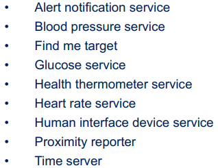
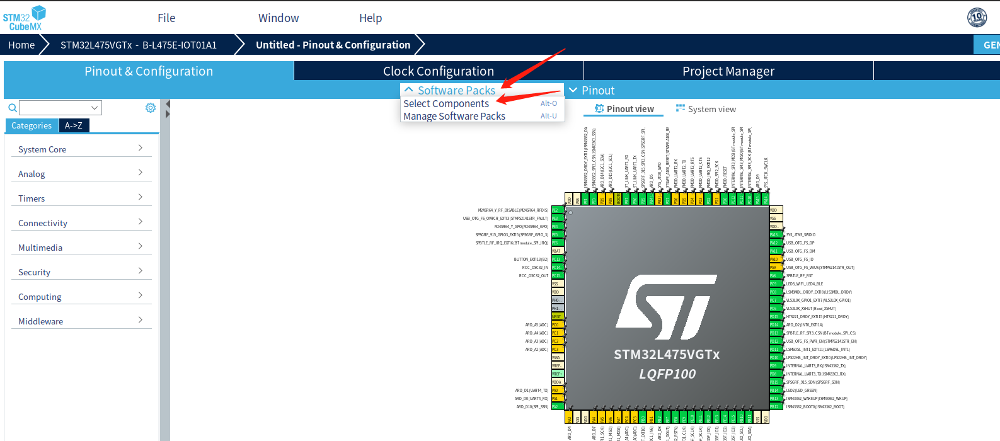
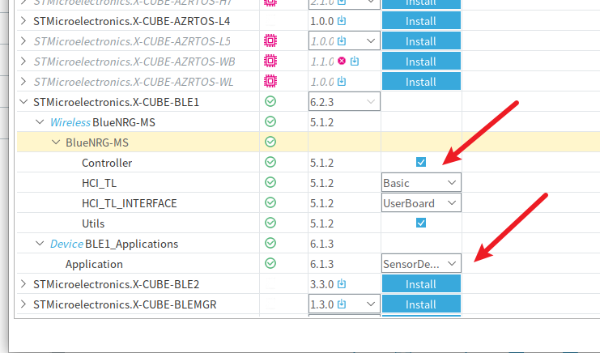
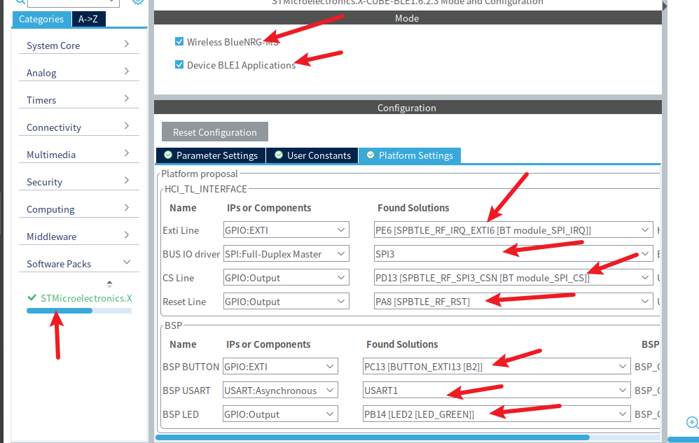
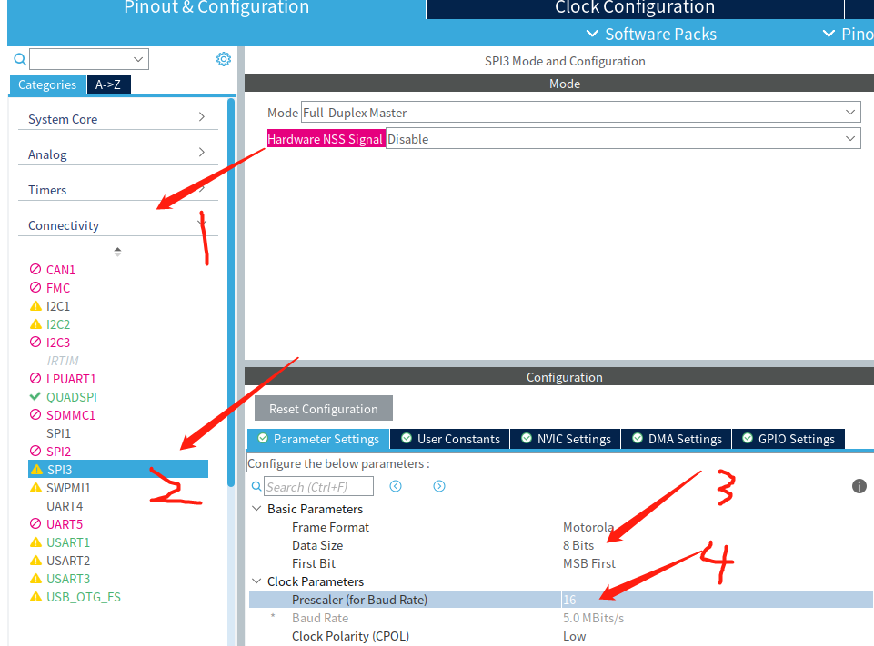
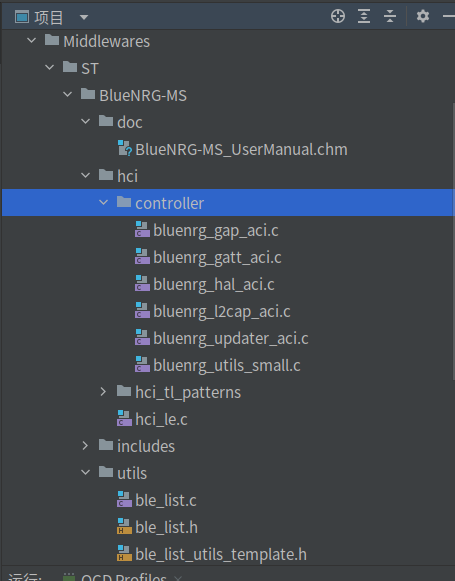
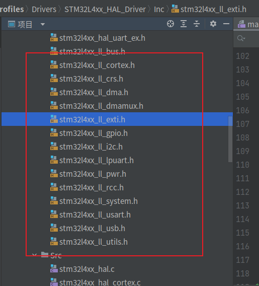

Profiles#
:exclamation: 注意
本文主要参考以下文档：
:link: Overview of the BLE Profiles application for X-CUBE-BLE1
:link: Getting started with the X-CUBE-BLE1 Bluetooth Low Energy software expansion for STM32Cube
本章节完成与 BLE Profiles 相关的实验，而在 BLE 开发过程中，需要先了解两个协议：GAP（Generic Access Profile）和 GATT (Generic Attribute Profile) ，中文名分别是通用访问协议和通用属性协议。这两个协议都隶属于整个蓝牙协议中的Host层，直接关系到应用层开发，两个协议分别负责连接前数据广播和连接后的数据传输，更详细的说明请自行搜索了解。低功耗蓝牙协议栈框架如图所示：

BLE Profiles 应用程序支持 BLE peripheral 和 central roles，支持的 slave profiles 包括：

实验目的#
学习蓝牙的Profiles
准备工作#
手机安装有 ST BLE Sensor 和ST BLE Profile软件
STM32CubeMX 中安装 X-CUBE-BLE1 软件包，安装方式如下：


硬件#
实验箱、手机、PC
软件#
ST BLE Sensor、ST BLE Profile、CLion、STM32CubeMX
相关电路原理#
蓝牙模块使用的是开发板的SPI3接口
引脚定义与相关API#
内容~~~~~
实验步骤#
STM32CubeMX创建工程#
主要流程与前面的实验相同，不同之处在于要选择使用 X-CUBE-BLE1 包，配置 SPI 引脚
选择 X-CUBE-BLE1 包
点击 Select Components

配置如图所示，右边是相关文档说明，点击 Ok

配置引脚
左侧出现 Software Packs 选项，配置如图所示

修改 SPI3 的参数，按照官方文档说明，Data Size 配置为 8 Bits，Baud Rate 不超过 8.0 MBits/s

最后生成工程
代码编写及运行结果#
先测试工程是否能正常运行，这需要用到ST BLE Sensor软件。代码烧录后，打开软件，可以搜索出BlueNRG

连接后出现以下界面，就说明配置正确，这样子就把需要用到的协议栈添加到了工程中，这就实现了一个profiles


HR Profiles的实现#
除此之外，蓝牙还有其他profiles，例如HID、HR、HT等，接下来尝试移植HR Profiles（即心率）。
STM32 LL库#
由于官方的BLE例程中用到了LL库，因此，在移植其余Profiles前，需要大概了解一下LL库。
LL库旨在提供快速轻巧的面向专家的层，其比 HAL 库更接近硬件。 与 HAL 相反，LL API 不是提供给优化访问不是关键功能的外围设备或需要繁重的软件配置和/或复杂的上层协议栈（例如 FSMC，USB 或 SDMMC）。 在设计上，LL 库的 API 旨在用于独立模式或与 HAL 库结合使用。不过它们不能与 HAL库同时用于相同的外设实例。如果您将 LL api 用于特定的外设实例，那么您仍然可以将 HAL api 用于其他外设实例。注意，LL api可能会覆盖一些寄存器，这些寄存器的内容被映射到 HAL 句柄中。
在用cubemx生成的工程中，会自动包含LL库的头文件，如图：

开始移植#
了解这些后，我们来看看官方例程，路径为：~/STM32Cube/Repository/STM32Cube_FW_L4_V1.17.2/Projects/B-L475E-IOT01A/Applications/BLE/HeartRate
这个例程展示了如何使用BLE组件的HeartRate Profiles。
需要注意的是，由于这个例程不是用cubemx生成的（年代久远的例程），因此不能用clion打开。
在该例程中，用到的关键函数如下：
/**
* Configure the RTC
*/
Init_RTC(); /**< Initialize the RTC IP */
HW_TS_Init(hw_ts_InitMode_Full, &hrtc); /**< Initialize the TimerServer */
//.............
/**
* It shall be registered before calling HR_Init()
*/
SCH_RegTask( CFG_IdleTask_MeasReq, HRSAPP_Measurement );
SCH_RegTask( CFG_IdleTask_HciAsynchEvt, TL_BLE_HCI_UserEvtProc );
SCH_RegTask( CFG_IdleTask_TlEvt, TL_BLE_R_EvtProc );
SCH_RegTask( CFG_IdleTask_ConnMgr, HR_AdvUpdate );
/**
* BLE application start
*/
HR_Init(HR_Full);
//.............
SCH_Run();
移植过程省略。。。
运行结果#
下载程序后，打开手机的GPS和蓝牙，可搜索出HR_L475_IoT，连接后可看到以下现象。（注意，这个心率不是真正的心率，大家也可以想到的，因为所用的开发板上并没有心率传感器，这个心率只是用RTC生成的随机心率，实际使用的话，需要在代码中修改为心率传感器测得的心率）。